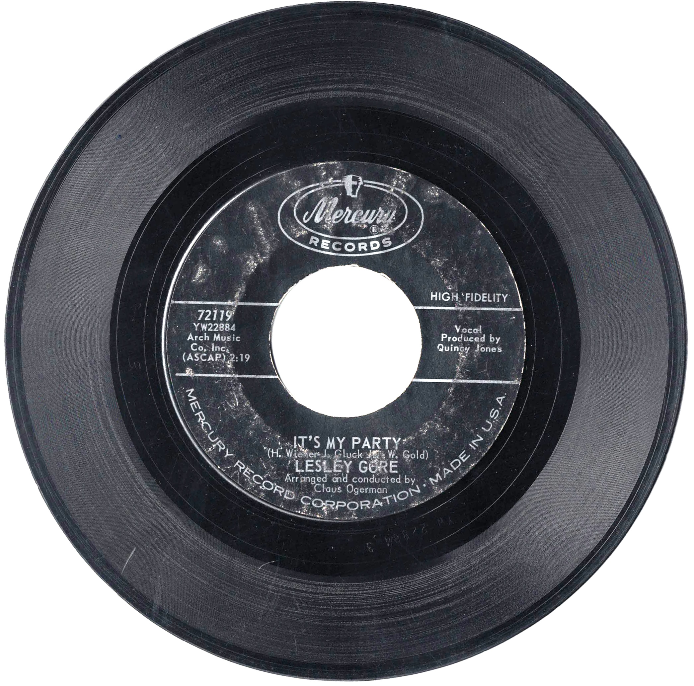

Product No. HEC-0103
$4.95
Shipping: $8.95
Description
45 RPM, 7-inch single
Full Description
Lesley Gore (Deceased) was an American singer, songwriter, actress, and television personality best known for a string of major pop hits during the 1960s. Born Lesley Sue Goldstein in Brooklyn, New York, in 1946, she was still a teenager when producer Quincy Jones discovered her and helped launch her recording career. Gore became an overnight star in 1963 with "It's My Party," which reached No. 1 on the Billboard Hot 100. She quickly followed it with other successful singles including "Judy's Turn to Cry," "She's a Fool," "You Don't Own Me," "That's the Way Boys Are," and "Maybe I Know." "You Don't Own Me" became especially enduring for its message of independence and has remained one of the defining pop recordings of the 1960s. In addition to her music career, Gore made television appearances, including a recurring role on the 1960s "Batman" series as Pussycat, one of Catwoman's associates. She later continued writing and performing and co-wrote the Academy Award-nominated song "Out Here on My Own" for the 1980 film "Fame." Lesley Gore died in 2015 at age 68. Her distinctive voice, memorable recordings, and combination of youthful pop and independent-minded songs secured her place as one of the most recognizable female singers of the 1960s.
Condition
Good condition